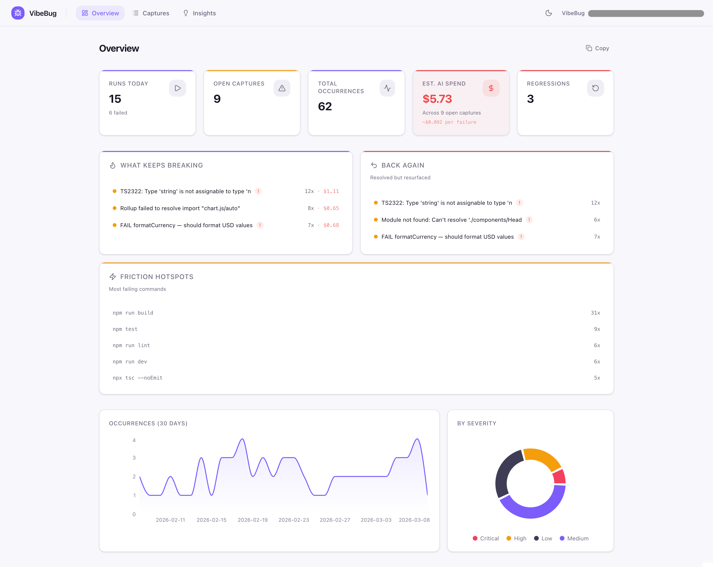

VibeBug is a local-first CLI that captures build, test, and runtime failures while you code with AI — so you can see what keeps breaking, what came back, and what debugging is costing you.
Works with your normal terminal workflow. No cloud. No account. No interruption. See how it works ›
When you code with AI, failures pile up quickly.
A build breaks. A test fails. A dev server throws an error. You fix one thing, move on, and two hours later the same issue is back — but now it feels new again.
Most of the problem is not just the failure itself. It's the lack of memory around it.
You lose the error in terminal scrollback. You forget what already happened. You repeat the same debugging loop. And if you are using AI to help fix things, the cost keeps stacking quietly in the background.
VibeBug gives your terminal a memory.
$ npm run build
Error: Cannot find module './components/Auth'
→ scrolled past, forgotten
$ npm run build
Error: Cannot find module './components/Auth'
→ same error, 2 hours later
$ pytest
FAILED tests/test_api.py::test_auth - fixture error
→ broke again after "fix"
no history · no grouping · no memory
VibeBug wraps your normal terminal commands and watches for build, test, and runtime failures in the background. You keep using your tools as usual. VibeBug simply captures what failed, groups recurring issues together, and helps you see patterns over time.
Same commands. Same output. More visibility.
No config files. No accounts. No cloud. Just prefix your commands.
vbRun your usual build, test, or dev commands through VibeBug. If they fail, VibeBug captures it automatically.
$ vb npm run build
$ vb pytest
$ vb cargo test
VibeBug detects failed commands and watches terminal output for runtime errors. Recurring issues are grouped together.
$ vb npm run build
ERR! Cannot find module
✓ Failure captured
↻ Recurring issue grouped
Open the local dashboard to see recurring failures, regressions, failing commands, and estimated AI debugging cost.
$ vb dash
► Dashboard at localhost:7600
See which issues keep returning instead of treating every failure like a brand-new problem.
When something breaks again after being fixed, VibeBug flags it so it does not silently re-enter the loop.
Estimate how much repeated failures are costing you in AI-assisted debugging.
Track failure history with command, git context, and fixes so debugging does not start from zero every time.
VibeBug includes a local dashboard that turns terminal noise into something you can review and learn from. See open captures, recurring failures, regressions, fix history, failing commands, and project-level patterns in one place.

vb <command>
Run a command while VibeBug watches for failures
vb dash
Open the local dashboard
vb list
View captured failures in the terminal
vb fix --last
Record what fixed the latest failure
vb summary
Generate a shareable project failure summary
vb export
Export data as JSON, CSV, or Markdown
vb ignore
Suppress noisy patterns
# just code normally
$ vb npm run dev
# failures captured in the background
Runtime error detected → captured
↻ Grouped with 3 previous occurrences
# check anytime
$ vb list
3 open · 1 regression · 2 recurring
no forms · no tickets · no context switch
Most debugging tools ask you to stop what you are doing and report something manually.
VibeBug takes the opposite approach.
It works passively in the background while you keep coding. No account setup. No cloud dependency. No issue-filing ceremony. No forced workflow change.
It is designed for developers who want more visibility without adding more overhead.
VibeBug stores its data locally in your project. No cloud account is required. When you generate summaries or exports, sensitive details like paths and tokens can be sanitized to make sharing safer.
Fast to start
One install, one init
Easy to trust
Open source, MIT licensed
Stays local
SQLite in your project
Share-safe
Sanitized exports
No cloud by default. No account required. Share on your terms.
VibeBug is especially useful for developers who:
VibeBug helps turn raw terminal failures into a project-level summary of what is happening.
Useful for personal review, team context, or sharing what actually keeps breaking.
No. Your command runs normally and output still flows through the terminal as expected.
No. VibeBug is local-first and stores data locally by default.
No. You just prefix commands with vb and keep working as usual.
No, but it is especially useful for AI-assisted workflows where failures are frequent, repeated, and easy to lose in terminal output.
Yes. Summaries and exports are designed to be share-safe, with sanitization for sensitive details.
VibeBug helps you turn terminal failures into useful memory — without slowing down how you build.
npm install -g vibebug
Local-first CLI • No account • Built for fast AI-assisted coding workflows